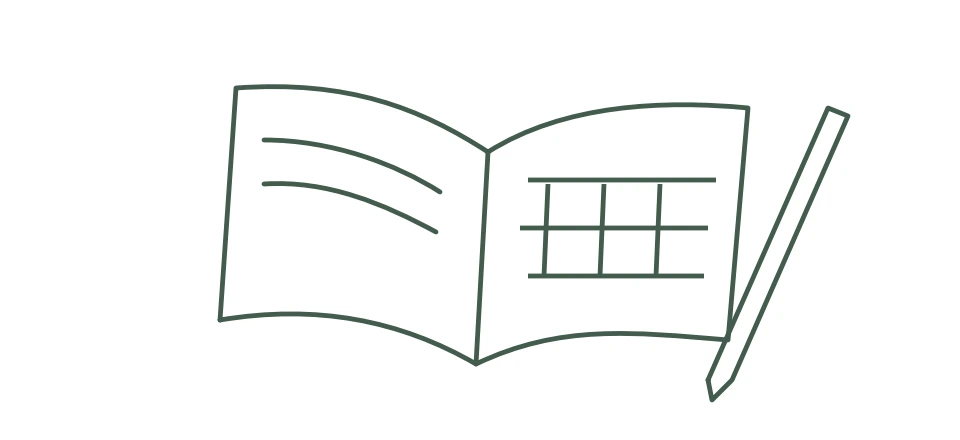

Odisha’s Budget Stabilisation Fund: Saving for a Rainy Day
Read in book
Odisha has emerged as a top notch state in India so far as fiscal discipline is concerned. The recent study of Niti Aayog on the state finances found that during the year 2024-25 Odisha secured the first position in maintaining fiscal discipline among the major states and in adhering to the FRBM targets consistently for years together. While it’s one of the few states to achieve revenue surplus consistently for almost two decades, the sustainable debt management of the state is equally praiseworthy. In fact Odisha is a front runner in introducing fiscal reforms. One of such reforms is creation of Budget Stabilisation Fund ( BSF) in the year 2022-23 which is first time in India. Now Government of India is contemplating to create such a fund at the national level as announced by the Union Finance Minister Nirmala Sitharaman recently.
The Budget Stabilisation Fund of Odisha is a fiscal reserve created by the state government to manage revenue volatility, especially from the mining sector. Its origin, genesis, and current status can be explained as follows.
Origin of the Budget Stabilisation Fund in Odisha :
The idea of a stabilization or “rainy day” fund is not unique to Odisha. Such funds are widely used internationally (e.g., in U.S. states and resource-rich countries) to save surplus revenue during boom periods and use it during downturns. In Odisha, the need arose because of the following factor :
The state is rich in mineral resources (iron ore, coal, bauxite, etc.).Mining revenue forms a large share of the state’s revenue, making finances vulnerable to fluctuations in global commodity prices. Mining contributes roughly 10% of the State’s Gross Value Added (GVA) and a large share of non-tax revenue. Thus, dependence on the volatile mining sector created fiscal risks, prompting the state to create a stabilisation mechanism.
Policy Background :
The creation of the BSF is linked with Odisha’s improved fiscal position and policy reforms initiated during the initial years of this century. As a part of the Fiscal discipline framework, the Odisha Fiscal Responsibility and Budget Management Act, 2005 provided a rule-based framework for fiscal consolidation and responsible budgeting. Over time, the state achieved revenue surplus and reduced debt, enabling creation of a reserve fund.
In the year 2022-23, the state government announced the creation of the Budget Stabilisation Fund ( BSF) with an initial corpus of ₹10,000 crore. As a matter of fact, Odisha became the first Indian state to create such a fund. The fund was officially constituted on 24th March, 2023 by a government notification. It was created in the Public Account under “Revenue Reserve Fund” .
The BSF broadly aims to:
- Act as a buffer against revenue shocks caused by fluctuations in mineral prices.
- Maintain stable government expenditure even when revenue income declines.
- Reduce dependence on borrowing during economic downturns.
Structure and Management :
Key operational features of BSF include -
- Funds are invested in secure financial instruments such as Government of India securities, Treasury Bills and State government securities. Thus it accrues interest over a period of time.
- Investments are handled through the Reserve Bank of India’s Central Accounts Section. This makes the BSF similar to a sub-national sovereign wealth fund.
Present Status of BSF :
According to the Comptroller and Auditor General (CAG) report for 2023-24 -
- Opening balance (1 April 2023): ₹13,632.52 crore
- Additional transfer during 2023-24: ₹5,000 crore
- Interest earned: ₹942.35 crore
- Closing balance (2023-24): ₹19,574.87 crore
Other estimates indicate the corpus has already crossed about ₹20,000 crore, making it one of the largest fiscal reserves maintained by an Indian state.
Significance of the Fund :
The Budget Stabilisation Fund is important because it stabilises state finances against commodity price shocks. It also helps maintain consistent public expenditure. Besides, it reduces the need for excessive borrowing during revenue shortfalls. Finally, it serves as a model of fiscal prudence for other Indian states.
Conclusion :
In managing public finances it’s imperative to maintain the same prudence of a common citizen while managing his own household. In our ordinary lives we always try to make some savings in order to meet future exigencies. This is a pragmatic way of managing the financial system at the domestic front. The same principle underlies the creation of Budget Stabilisation Fund in our state and with an amount of Rs 20000 crore now available in the fund we are assured of facing any eventuality or crisis that may arise due to any external or internal circumstances. Odisha has become a role model in this regard for other states in the country.